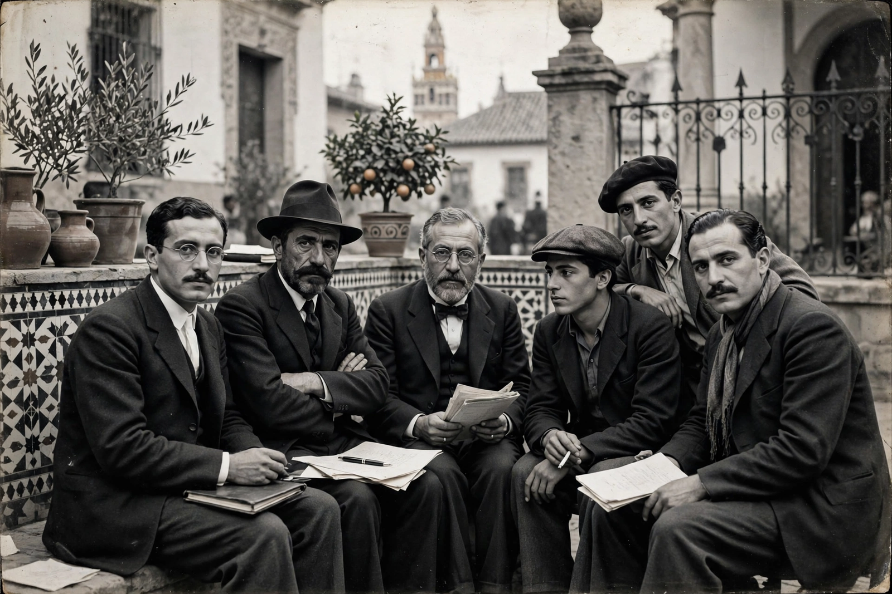

Generation of '27

| Generation of '27 | |
|---|---|
| Country | Spain |
| Years active | c. 1923 – 1939 |
| Key figures | Federico García Lorca, Rafael Alberti, Jorge Guillén, Pedro Salinas, Luis Cernuda, Vicente Aleixandre, Dámaso Alonso, Manuel Altolaguirre |
| Movement | Spanish avant-garde poetry; Silver Age of Spanish literature |
The Generation of '27 (Spanish: Generación del 27) was a group of Spanish poets who emerged in the 1920s and became the most influential literary generation of 20th-century Spain, the centrepiece of the so-called Silver Age of Spanish literature. The name derives from a gathering in Seville in December 1927 to commemorate the third centenary of the death of the Baroque poet Luis de Góngora, whose intricate style the young poets championed.
Characteristics
The generation united apparently opposed tendencies: a fascination with the European avant-garde — surrealism, futurism, pure poetry — and a deep engagement with Spanish tradition, from medieval ballads and the cancioneros to Góngora and the Golden Age theatre. Many members were associated with Madrid's Residencia de Estudiantes, where they mixed with figures such as Salvador Dalí and Luis Buñuel, and with the mentorship of Juan Ramón Jiménez. Women writers of the circle, long overlooked, included the Sinsombrero group — Maruja Mallo, Concha Méndez, Ernestina de Champourcín and others.
The Civil War and exile
The Spanish Civil War destroyed the generation as a group. Federico García Lorca, its most famous member, was murdered by Nationalist forces in August 1936. Many others went into exile: Rafael Alberti to Argentina and Italy, Luis Cernuda to Mexico, Pedro Salinas and Jorge Guillén to the United States. Vicente Aleixandre remained in Spain and won the Nobel Prize in Literature in 1977; Dámaso Alonso became a leading philologist and later president of the Royal Spanish Academy.
See also: Generation of '98 · Spanish literature · Surrealism